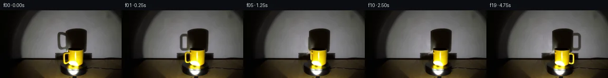
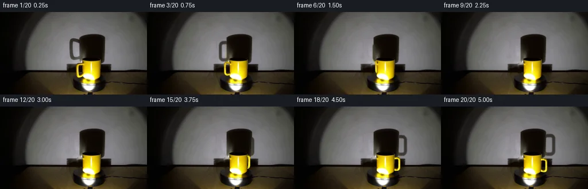
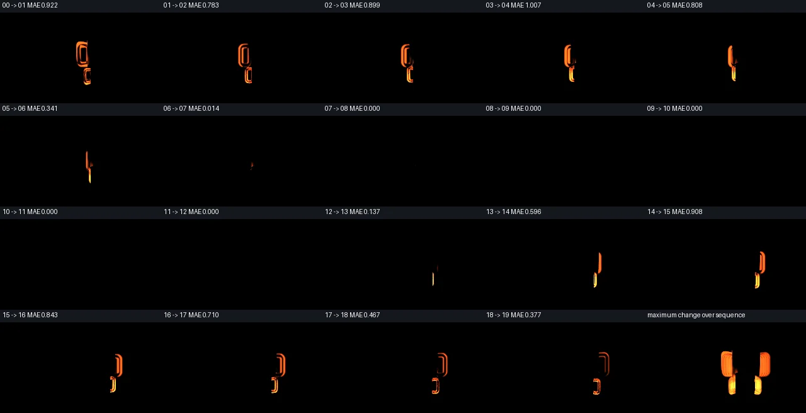

V0 · 初版
2026-11-05T04:26:54.152567+00:00 · RGB 5087919d1742
![]()
Observable Generation Trace
把最终像素视频、Harness 冻结的每轮候选、真实工具事件和 Agent 自述放在同一页。可观测证据与模型自述分开标记，避免把“模型说它检查过”误当成真实工具调用。
![首帧]()
Static locked-off single-shot with fixed frame throughout filmed with constant framerate in real-time. The scene shows a realistic scientific demonstration. The scene only contains the described setup and actions. The yellow mug sits on the black, clockwise-rotating platform, and the spotlight points toward the yellow mug. The yellow mug rotates clockwise on the black platform while the spotlight casts a large shadow on the wall behind it.
首帧显示在左侧播放器初始画面。Track 权限、隔离和 tensor 一致性来自 run manifest，而不是 METHOD.md。
默认勾选初版和最终版；可选其他版本一起同步播放。仅检查图更新的连续重复快照已合并，回退旧视频仍保留为一次修订。
Observable events
来源：events.jsonl + run manifest
此 Track 禁止读取输出图片。逐轮预览由外部 Harness 自动冻结，只用于事后审计，生成 Agent 当时看不到这些页面。
Frozen candidates
每张图来自该 round 的真实 00 / 01 / 05 / 10 / 19 帧
pixels 243660442f4225be · code 7e5bfafdd9d65da1
--- previous/generate.py
+++ current/generate.py
@@ -0,0 +1,265 @@
+"""Photographic pixel continuation with a locally rasterized rotating handle.
+No external renderer, learned model, additional scene input, or image inspection.
+"""
+from pathlib import Path
+import json
+import numpy as np
+from PIL import Image, ImageDraw, ImageFilter
+from scipy.ndimage import map_coordinates, distance_transform_edt, gaussian_filter, binary_dilation
+import cv2
+from artifact_io import save
+
+ROOT=Path(__file__).resolve().parent
+SS=4
+H,W=144,256
+SRC=np.asarray(Image.open(ROOT/'first_frame.png').convert('RGB')).astype(np.float64)
+YY,XX=np.mgrid[:H,:W]
+
+def fit_wall():
+ # Fit the broad illumination from nearby clear wall pixels. Interior of the
+ # photographed loop also supplies real wall values at the same position.
+ x=(XX-128)/28.; y=(YY-65)/28.
+ terms=[np.ones_like(x),x,y,x*x,x*y,y*y,x*x*x,x*x*y,x*y*y,y*y*y]
+ design=np.stack(terms,-1)
+ clear=(XX>=101)&(XX<=137)&(YY>=34)&(YY<=88)
+ clear &= SRC.mean(-1)>110
+ clear &= ~((XX>=119)&(XX<=137)&(YY>=45)&(YY<=52))
+ coeff=np.linalg.lstsq(design[clear],SRC[clear],rcond=None)[0]
+ wall=np.clip(design@coeff,0,255)
+ # Keep a little photographed wall grain, only from the clear area.
+ residual=SRC-wall
+ cleanres=residual[clear]
+ print('wall polynomial fit rms RGB:',np.sqrt(np.mean(cleanres**2,axis=0)).round(3).tolist())
+ return wall
+
+WALL=fit_wall()
+PLATE=SRC.copy()
+# Remove the initial shadow loop, ending before the main cylinder shadow.
+area=(XX>=118)&(XX<=138)&(YY>=44)&(YY<=85)
+old_shadow=area & ((WALL.mean(-1)-SRC.mean(-1))>13)
+# Preserve the softened edge of the large stationary cylindrical shadow.
+edge=np.clip((XX-136.7)/2.,0,1)
+replacement=WALL.copy()
+replacement[:,:,0]+=0.25*np.sin(XX*1.93+YY*.77)
+replacement[:,:,1]+=0.25*np.sin(XX*1.93+YY*.77)
+replacement[:,:,2]+=0.25*np.sin(XX*1.93+YY*.77)
+# Extrapolate the main shadow's boundary into the small region where it overlaps
+# the handle. A half-pixel ramp keeps the cylinder outline soft.
+for y in range(44,86):
+ body=SRC[y,139]
+ main=np.clip((XX[y]-137.2)/1.8,0,1)
+ replacement[y]=replacement[y]*(1-main[:,None])+np.minimum(replacement[y],body)[...]*main[:,None]
+PLATE[old_shadow]=replacement[old_shadow]
+
+# Only the ceramic handle is removed from the foreground. The inner hole and
+# all pixels of the mug itself are retained. Background estimates prevent the
+# adjacent yellow cylinder from bleeding into an inpainted handle region.
+fgarea=(XX>=131)&(XX<=143)&(YY>=89)&(YY<=114)
+yellow=(SRC[:,:,0]>60)&(SRC[:,:,1]>35)&(SRC[:,:,1]>1.6*(SRC[:,:,2]+2))
+old_handle=binary_dilation(fgarea&yellow,iterations=1)&fgarea
+working=np.clip(PLATE,0,255).astype(np.uint8)
+# A virtual dark right boundary excludes the cup from the inpainting donors.
+patch=working[87:117,126:145].copy()
+mask=old_handle[87:117,126:145].astype(np.uint8)*255
+for y in range(87,117):
+ if 94<=y<=107:
+ donor=np.median(SRC[y,139:143],axis=0)
+ elif 90<=y<94:
+ donor=SRC[y,130]
+ elif 108<=y<=114:
+ donor=np.median(SRC[y,128:132],axis=0)
+ else:
+ donor=SRC[y,130]
+ patch[y-87,17:19]=np.clip(donor,0,255)
+paint=cv2.inpaint(patch,mask,3,cv2.INPAINT_NS)
+region=PLATE[87:117,126:145]
+region[mask>0]=paint[mask>0]
+
+# A source material map sampled only from the original handle / its ceramic
+# attachment; nearest ceramic samples extend it to newly exposed tube facets.
+material_mask=(XX>=132)&(XX<=147)&(YY>=89)&(YY<=114)&yellow
+material_mask |= (XX>=135)&(XX<=141)&(YY>=110)&(YY<=113)&(SRC[:,:,0]>200)
+_,indices=distance_transform_edt(~material_mask,return_indices=True)
+MATERIAL=SRC[indices[0],indices[1]]
+MATERIAL=gaussian_filter(MATERIAL,(.25,.25,0))
+
+# The rounded rectangular handle's centerline: 4 straight portions joined by
+# quarter circles, lying in a radial vertical plane through the cup axis.
… diff truncated; 178 more lines …pixels fadaea15869819bb · code ac467983573eafd6
--- previous/generate.py
+++ current/generate.py
@@ -33,6 +33,14 @@
return wall
WALL=fit_wall()
+# A separate broad fit uses clear wall on both sides of the cylinder. The
+# local left-side fit above is used only for recovering the old shadow loop.
+wx=(XX-159)/55.;wy=(YY-65)/32.
+wd=np.stack([np.ones_like(wx),wx,wy,wx*wx,wx*wy,wy*wy,wx**3,wx*wx*wy,wx*wy*wy,wy**3],-1)
+wc=(XX>=99)&(XX<=218)&(YY>=30)&(YY<=89)&(SRC.mean(-1)>106)
+wc &= ~((XX>=118)&(XX<=184)&(YY>=38)&(YY<=86))
+wb=np.linalg.lstsq(wd[wc],SRC[wc],rcond=None)[0]
+WIDE_WALL=np.clip(wd@wb,0,255)
PLATE=SRC.copy()
# Remove the initial shadow loop, ending before the main cylinder shadow.
area=(XX>=118)&(XX<=138)&(YY>=44)&(YY<=85)
@@ -131,8 +139,11 @@
body_mask |= (XX>=147)&(XX<=173)&(YY>=85)&(YY<=113)
# Repair silhouette holes without spreading over the original handle.
body_mask=binary_dilation(body_mask,iterations=1)&(XX>=143)&(XX<=176)&(YY>=81)&(YY<=120)
-body_hi=np.asarray(Image.fromarray((body_mask*255).astype(np.uint8)).resize((W*SS,H*SS),Image.Resampling.NEAREST))>0
-hy,hx=np.mgrid[:H*SS,:W*SS];qx=(hx+.5)/SS
+hy,hx=np.mgrid[:H*SS,:W*SS];qx=(hx+.5)/SS;qy=(hy+.5)/SS
+# The dark opening at the top is also opaque to a handle behind the cup.
+# Its measured elliptical silhouette supplies occlusion, independent of color.
+rim=np.sqrt(np.maximum(0,1-((qx-159.5)/15.6)**2))
+body_hi=(qx>=143.9)&(qx<=175.1)&(qy>=85.2-4.2*rim)&(qy<=116.3+3.8*rim)
body_depth=-np.sqrt(np.maximum(0,15.6**2-(qx-159)**2))
@@ -216,9 +227,14 @@
shadow=render_shadow(theta)
transmission=np.array([20.,15.,6.])
density=np.clip(.71-.0019*(YY-48),.59,.73)
- projected=WALL*(1-density[:,:,None]*shadow[:,:,None])+transmission*density[:,:,None]*shadow[:,:,None]
+ # Retain actual wall texture wherever it is visible. Only the existing
+ # cylinder shadow needs an estimate of its unshadowed background.
+ shadow_background=PLATE.copy()
+ covered=(XX>=137)&(XX<=184)&(YY>=37)&(YY<=89)
+ shadow_background[covered]=WIDE_WALL[covered]
+ projected=shadow_background*(1-density[:,:,None]*shadow[:,:,None])+transmission*density[:,:,None]*shadow[:,:,None]
frame=PLATE.copy()
- wallroi=(XX>=112)&(XX<=207)&(YY>=34)&(YY<=102)
+ wallroi=(XX>=112)&(XX<=207)&(YY>=34)&(YY<=102)&(shadow>0)
# Union of the two shadow silhouettes, avoiding double darkness where
# the handle projects inside the already-dark cylindrical shadow.
frame[wallroi]=np.minimum(frame,projected)[wallroi]pixels fadaea15869819bb · code ac467983573eafd6
No generate.py text change in this frozen round.

pixels 2ab2a983fb9d0dc5 · code b611f3591f74f9a3
--- previous/generate.py
+++ current/generate.py
@@ -3,6 +3,8 @@
"""
from pathlib import Path
import json
+import base64
+import re
import numpy as np
from PIL import Image, ImageDraw, ImageFilter
from scipy.ndimage import map_coordinates, distance_transform_edt, gaussian_filter, binary_dilation
@@ -145,6 +147,7 @@
rim=np.sqrt(np.maximum(0,1-((qx-159.5)/15.6)**2))
body_hi=(qx>=143.9)&(qx<=175.1)&(qy>=85.2-4.2*rim)&(qy<=116.3+3.8*rim)
body_depth=-np.sqrt(np.maximum(0,15.6**2-(qx-159)**2))
+cup_silhouette=body_hi.reshape(H,SS,W,SS).any((1,3))
def orient(theta):
@@ -235,6 +238,7 @@
projected=shadow_background*(1-density[:,:,None]*shadow[:,:,None])+transmission*density[:,:,None]*shadow[:,:,None]
frame=PLATE.copy()
wallroi=(XX>=112)&(XX<=207)&(YY>=34)&(YY<=102)&(shadow>0)
+ wallroi &= ~cup_silhouette
# Union of the two shadow silhouettes, avoiding double darkness where
# the handle projects inside the already-dark cylindrical shadow.
frame[wallroi]=np.minimum(frame,projected)[wallroi]
@@ -270,11 +274,30 @@
tensor_rgb=np.stack([(packed[:,:,t]>>16)&255,(packed[:,:,t]>>8)&255,packed[:,:,t]&255],-1).astype(np.uint8)
assert np.array_equal(png,tensor_rgb),t
assert np.array_equal(frames[0],SRC.astype(np.uint8))
+ central_cup=(XX>=146)&(XX<=171)&(YY>=86)&(YY<=114)
+ cup_difference=int(np.max(np.abs(frames[:,central_cup].astype(int)-frames[0,central_cup].astype(int))))
+ assert cup_difference==0,cup_difference
+ # Verify the exact little-endian delta packets consumed by the player.
+ html=(ROOT/'index.html').read_text()
+ data=json.loads(re.search(r'const DATA=(.*?);\nfunction unpack',html).group(1))
+ decode=lambda s:np.frombuffer(base64.b64decode(s),dtype='<u4')
+ reconstructed=[decode(data['first']).copy()]
+ for encoded in data['deltas']:
+ out=reconstructed[-1].copy();packet=decode(encoded);i=0
+ while i<len(packet):
+ start,count=map(int,packet[i:i+2]);i+=2
+ out[start:start+count]=packet[i:i+count];i+=count
+ reconstructed.append(out)
+ assert np.array_equal(np.asarray(reconstructed).reshape(20,H,W).transpose(1,2,0),packed)
diff=frames.astype(np.int16)-SRC.astype(np.int16)
changes=np.any(diff!=0,-1)
stable=(XX<110)|(XX>211)|(YY<32)|(YY>141)
assert not changes[:,stable].any()
summary={'frame_count':20,'shape_rgb':list(frames.shape),'tensor_shape':list(packed.shape),'tensor_dtype':str(packed.dtype),'fps':4,'duration_seconds':5,'first_frame_exact':True,'all_pngs_match_tensor':True,'fixed_outer_background_exact':True,'adjacent_mae':[round(float(d.mean()),6) for d in differences],'adjacent_changed_pixels': [int((d>0).sum()) for d in differences],'events':reports}
+ summary['standalone_html_matches_tensor']=True
+ summary['fixed_central_mug_max_channel_difference']=cup_difference
+ cy,cx=np.nonzero(changes.any(0))
+ summary['all_changed_pixels_bbox_xy']=[int(cx.min()),int(cy.min()),int(cx.max()),int(cy.max())]
(ROOT/'validation.json').write_text(json.dumps(summary,indent=2)+'\n')
print(json.dumps({k:v for k,v in summary.items() if k!='events'},indent=2),flush=True)
pixels 2ab2a983fb9d0dc5 · code b611f3591f74f9a3
No generate.py text change in this frozen round.
Final visual checks
Harness 保存的最终产物


Agent claims
以下文字由生成 Agent 撰写，不等同于工具证据
The supplied first frame is an RGB photograph at 256 × 144. The camera is fixed, looking slightly down at a yellow ceramic mug on a black turntable. The tabletop begins near y=102. A broad, soft spotlight illuminates the grey wall, with its brightest area around (151,62); the outer frame is dark. The turntable spans approximately x=125–186, y=114–141, with an elliptical top and a bright reflection on its front near (155,128).
The mug's vertical axis is near x=159. Its open, elliptical rim occupies approximately x=144–175, y=81–90; the cylindrical body ends near y=119. Its left handle occupies approximately x=132–147, y=89–115. The yellow body is strongly lit toward its lower left/front and darker on its right. The enlarged mug shadow occupies x=138–183, y=38–94. Its handle shadow is a rounded rectangular loop at approximately x=121–142, y=46–85. The wall, spotlight, turntable position, mug axis and exposure remain fixed. Rotation of a plain cylindrical cup does not change the cup silhouette; its handle and the handle shadow provide the observable rotation.
Method planned before implementation: recover the local background under the initial handle and its shadow, retaining the rest of the photograph; rotate a mathematical rounded-loop ceramic handle about the cup axis; use local pixel texture and lighting to preserve photographic appearance; occlude the handle with the mug; project its shadow with a fixed low spotlight. Local Python/Numpy/Pillow pixel operations only. All later output inspection will be numeric, without an image viewer.
The 20 samples represent t=0.00–4.75 seconds at constant 4 fps. Use a constant clockwise angular rate of 40 degrees/second, as viewed from above. The starting handle points to the left. Clockwise motion carries it toward the rear, then around to the right, and just begins to approach the front. No other objects or actions enter the scene.
| Frame | Time (s) | Angle (degrees) | Planned visible event |
|---|---|---|---|
| 00 | 0.00 | 0 | Exact supplied photograph; handle at left. |
| 01 | 0.25 | 10 | Handle moves slightly back and up; shadow begins narrowing. |
| 02 | 0.50 | 20 | Left handle retreats; shadow follows. |
| 03 | 0.75 | 30 | Handle approaches left body silhouette. |
| 04 | 1.00 | 40 | More of handle becomes hidden by body. |
| 05 | 1.25 | 50 | Only outer left portion remains visible. |
| 06 | 1.50 | 60 | Small left handle sliver; shadow merges into main shadow. |
| 07 | 1.75 | 70 | Handle passes behind mug. |
| 08 | 2.00 | 80 | Rear handle obscured; circular cup retains fixed appearance. |
| 09 | 2.25 | 90 | Handle directly behind; main wall shadow is compact. |
| 10 | 2.50 | 100 | Handle still behind, beginning travel toward right. |
| 11 | 2.75 | 110 | Handle moves toward right silhouette. |
| 12 | 3.00 | 120 | Small right handle sliver emerges. |
| 13 | 3.25 | 130 | Outer right handle and shadow become apparent. |
| 14 | 3.50 | 140 | Right handle opens wider. |
| 15 | 3.75 | 150 | Right handle loop and enlarged wall loop become clear. |
| 16 | 4.00 | 160 | Handle approaches rightmost position. |
| 17 | 4.25 | 170 | Nearly full right profile. |
| 18 | 4.50 | 180 | Full right profile, opposite the initial orientation. |
| 19 | 4.75 | 190 | Handle starts moving forward on the right; shadow slightly expands. |
This is a local photographic pixel continuation. The only scene inputs are first_frame.png and prompt.txt. It uses Python, NumPy, Pillow, SciPy and OpenCV pixel operations. No network access, learned model, external rendering engine, additional reference, or subagent was used.
OBSERVATION.md records the scene measurements and the 20-frame event plan written before implementation. The mug rotates clockwise, viewed from above, at a constant 40 degrees/second. Samples are at t = 0, 0.25, …, 4.75 seconds. The standalone player displays each sample for 0.25 seconds, giving a 5-second sequence at 4 fps.
The camera, spotlight, tabletop, circular black turntable, cylindrical mug body and main cylindrical shadow use the original photograph. The turntable has no distinguishing angular marker; its circular silhouette and fixed-light reflection remain stationary during rotation. A plain, uniform cylindrical cup likewise has an unchanged silhouette under rotation.
The initial left handle is removed using a localized background inpaint with dark boundary donors, avoiding yellow contamination from the cup. The original handle shadow is removed with a local polynomial estimate of the illuminated wall. Its overlap with the fixed cylindrical shadow retains a soft boundary. The background outside these local repairs remains the original photograph.
The moving handle is a mathematical rounded rectangular loop swept with a circular ceramic tube. Its triangular surface is rotated around the vertical cup axis. A custom NumPy triangle rasterizer uses a depth buffer at four times the output resolution. The handle inherits yellow ceramic texture from nearest suitable pixels in the original handle and attachment, with a fixed point-light diffuse adjustment and a small analytic specular term for newly exposed facets. A measured cylindrical silhouette, including the dark open rim, occludes the rear handle. Colors and silhouette coverage are downsampled in premultiplied form.
The same handle mesh is projected onto the wall using an approximate low, fixed point spotlight. Its perspective enlargement decreases as the handle moves toward the wall and increases as it approaches the spotlight. A blurred silhouette produces the enlarged moving shadow. The handle shadow and existing cup shadow are combined without doubling the darkness of their overlap. The foreground cup masks the wall shadow. An estimate of the unlit wall beneath the original cylinder shadow uses a separate polynomial fit to clear wall on both sides; visible wall keeps its photographed texture.
This is an approximate geometric and photographic reconstruction, rather than a calibrated complete light-transport simulation. Source reflections on the symmetric cup and platform are retained. The moving handle uses an inferred geometry and lighting model. Frame 00 is assigned directly from the source RGB pixels, without synthesis or modification.
generate.py: reproducible generation and numeric validation.pixels.npz: key pixels, shape (144, 256, 20), dtype uint32, packed as 0xRRGGBB.frames/00.png through frames/19.png: 20 RGB images, each 256 × 144.inspection.png: contact sheet of selected frames.transition_check.png: numeric adjacent-frame difference heatmaps.index.html: standalone player with all frames encoded as exact pixel deltas.validation.json: format, equality, transition and geometric visibility diagnostics.All generated-output inspection used local code and numeric checks. The generated contact sheet and difference heatmaps were saved but were not opened with an image Read/View tool. No visual review of generated frames is claimed.
Numeric checks prompted three corrections: restricting the wall fit to the regions where it is needed, treating the dark mug opening as opaque to a rear handle, and excluding the foreground cup from the wall-shadow overlay. The final checks require:
Handle visibility and shadow bounds are logged per frame. The handle is fully hidden behind the cup in frames 06–12, then appears on the right in frame 13. The shadow follows the same constant angular progression. Adjacent-frame differences are recorded to make the localized motion numerically reviewable.
Run python generate.py from this workspace to rebuild all generated artifacts and validation.json.